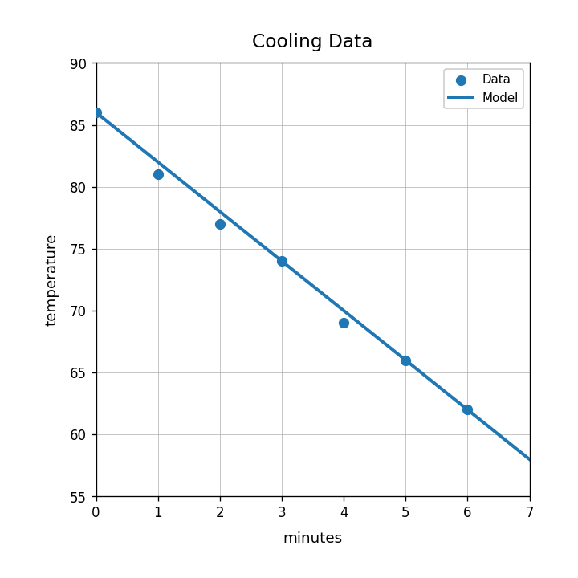
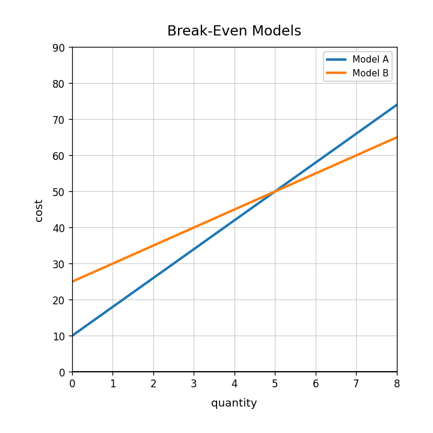

Current Focus Unit 2.5: Linear Modeling with Data DoK 1, DoK 1, DoK 2, DoK 3
Main Spiral Unit 1.5: Equations as Models 4 DoK 1, 2 DoK 2, 1 DoK 3, 1 DoK 4
Earlier Readiness Unit 0B.5: Comparing Representations DoK 1, DoK 1, DoK 2, DoK 3
Practice Set 2: This is a section-aligned spiral: 2.5 with 1.5 and 0B.5. It is not a previous-section spiral.
1.Unit 2.5 | DoK 1
Use the cooling data graph. Describe the association in words.

2.Unit 2.5 | DoK 1
What is a line of fit used for when working with a scatterplot?
3.Unit 2.5 | DoK 2
The model for the cooling data is approximately $T=-4m+86$. Predict the temperature at 7 minutes.
4.Unit 2.5 | DoK 3
A student says, “The model is exact because it is drawn through the data.” Critique the statement using the idea of prediction or residuals.
5.Unit 1.5 | DoK 1
Which equation represents “9 more than twice a number is 31”?
$9x+2=31$
$2x+9=31$
$2(x+9)=31$
6.Unit 1.5 | DoK 1
Identify the fixed starting cost in $C=12+4m$.
7.Unit 1.5 | DoK 1
Check whether $x=5$ is a solution: $$2x+3=13$$
8.Unit 1.5 | DoK 1
Match each card to a type: equation, context, table, or graph. The cards are intentionally not matched row-by-row.
$y=6x+4$
A plan charges 4 dollars plus 6 dollars each month.
Input/output values
A line on a coordinate plane
9.Unit 1.5 | DoK 2
Solve the equation and explain what the solution could represent: $$7x+12=47$$
10.Unit 1.5 | DoK 2
Compare Model A and Model B. What does the intersection represent in context?

11.Unit 1.5 | DoK 3
A student writes $4x+20=60$ for a situation with 20 items at 4 dollars each plus a 60 dollar total. Explain the modeling error and write a better equation.
12.Unit 1.5 | DoK 4
Design two different contexts that both lead to the equation $3x+15=45$. Explain why the same equation can model both.
13.Unit 0B.5 | DoK 1
Which equation has a starting value of 2?
$y=5x+2$
$y=2x+5$
$y=x-2$
14.Unit 0B.5 | DoK 1
A table has outputs 3, 7, 11, 15. What is the constant change?
15.Unit 0B.5 | DoK 2
Determine whether the equation $y=3x+2$ matches the table.
$x$
0
1
2
$y$
2
5
8
16.Unit 0B.5 | DoK 3
Two students represent the same pattern. One uses a table and one uses $y=5x+1$. What evidence would show that the representations match?